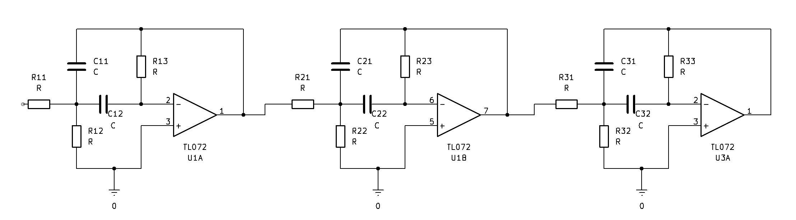

Multiple Feedback Bandpass Filter Designer
Filter specifikationer (Bandpass)
Approksimation:
Butterworth
Chebyshev
Passband (fn - fø):
Hz
kHz
MHz
Stopband (fsn - fsø):
Hz
kHz
MHz
Passband Atten (dB):
Stopband Atten (dB):
Ønsket Gain (V/V):
Praktisk Komponent Valg
Basis kondensator (C1=C2):
nF
uF
pF
C E-række:
E6
E12
R E-række:
E12
E24
E48
E96
Beregn Filter Design
Eksportér SPICE Netliste
Brug E-række i SPICE
Filter Orden: -
Stabilitet: -
Komponent
Ideel Værdi
E-række Valg
Sektion Info
Reference Diagram
